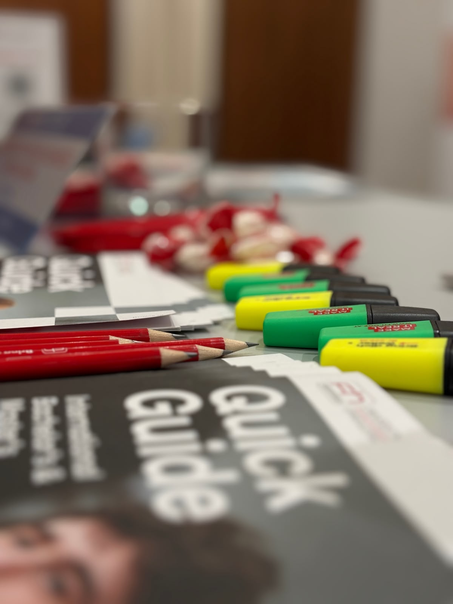
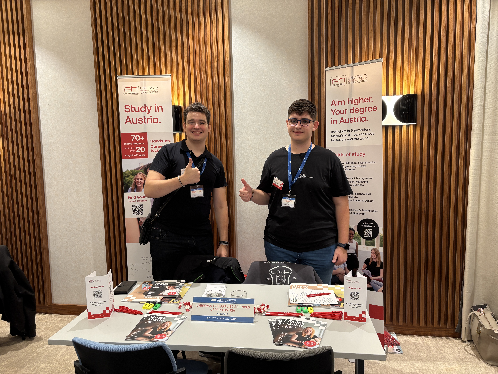

Days of International Education
At the end of September, I had my first occupation as a Student Ambassador of the University of Applied Sciences at the Days of International Education in Budapest. On this one year education fair, a few dozens of international high schools, summer camps, language schools and universities represented themselves to the interested students, raising their attention towards the option of studying abroad in secondary and higher education. I, as a representative of my university have been there to introduce our university to the interesed parties.
In detail, my task was to provide information about our university, give councelling regarding the fit of a study programme and provide detailed information on individual sutdy programs and the admission proceedure at our university. This had been a new opportunity, as our school is located at four different campusses across Upper Austria, meaning some familiarization before the event with the other campusses.
As expected, most of the students were interested in the International Degree Programs offered in the different fields, which was a close connection, as I am also in an English-thaught program.
It was a great experience and a great day spent in Budapest. Thanks to Sandro Tadic for being there with me and also to Mario Rubenzer, the Operations Manager of the FH OÖ, for coordinating everything for us from the background!


Participants: Sandro Tadic, BSc.1 Levente László Pocsay1 & Mario Rubenzer, MA MBA1 (Operations Manager).
- University of Applied Sciences Upper Austria